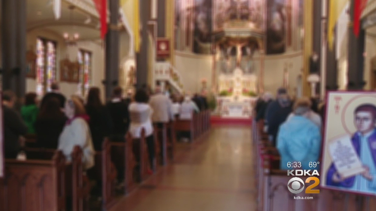

TODAY'S PITTSBURGH

September 16, 2018 at 1:46 pm
PITTSBURGH (KDKA) – A class action lawsuit has been filed against eight Roman Catholic dioceses in Pennsylvania, including the Dioceses of Pittsburgh and Greensburg.
The survivors of child sex abuse by priests and their families are asking for accountability. Their lawsuit goes back 70 years. They want to know who the predators are and if they are around children.
catholic church Class Action Lawsuit Filed Against 8 Catholic Dioceses In Pennsylvania
(Photo Credit: KDKA)
“Their words now are like the words were 20 years ago — empty. No more. They need to be held accountable. They need to be brought into the open,” Ryan O’Connor said.
O’Connor is the lead plaintiff in a case filed today in Common Pleas Court for Allegheny County.
“The relief in the case that we are seeking is not a pile of money. That’s not what Mr. O’Connor wants. He wants the release of this information. He wants the names. He wants them to name names. We know they haven’t done that and we also want the files. We want to know what went on,” O’Connor’s attorney, Ben Sweet said.
O’connor says he was abused when he was 9 or 10 by the priest at St. Joseph’s in Verona. Now, at age 46, he has two children in Catholic school and wants to know who is around them.
“These men are master liars and manipulators. They are predators. They lied to our parents. They manipulated our parents. They got into our lives. They are doing the same thing. It is the same playbook. Don’t buy into it,” he said.
The suit asks for all the names to be released from the Pennsylvania grand jury report, and they want internal church documents, too.
“We are particularly interested in [documents] which are the files that are at issue when a priest is being defrocked and taken out of the ministry. Those are documents that generally contain very damaging information, and we think it should be released for the public good,” Sweet said.
O’Connor remains active in the church and hopes church leaders will to do the right thing.
“This is not about money. It has never been about money for me. It’s about transparency and it’s about truth. That’s all we want,” he said.
jis103@pitt.edu \ Contents belong to https://pittsburgh.cbslocal.com/